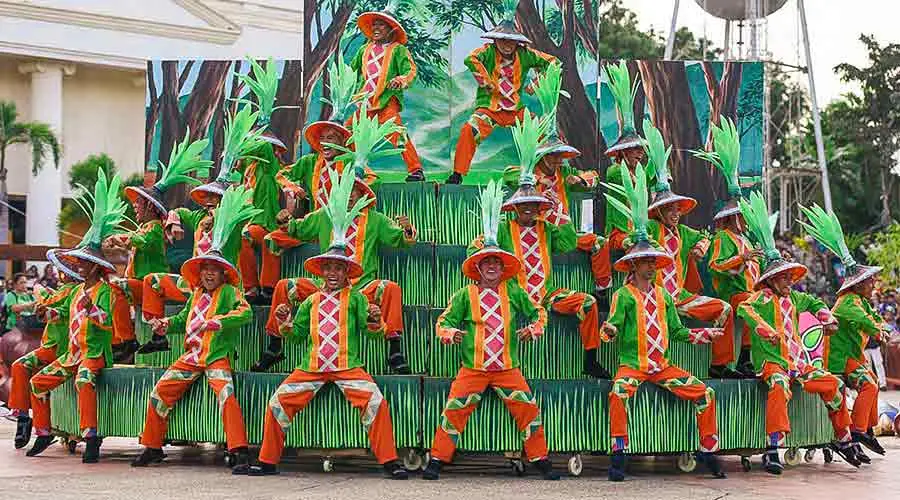
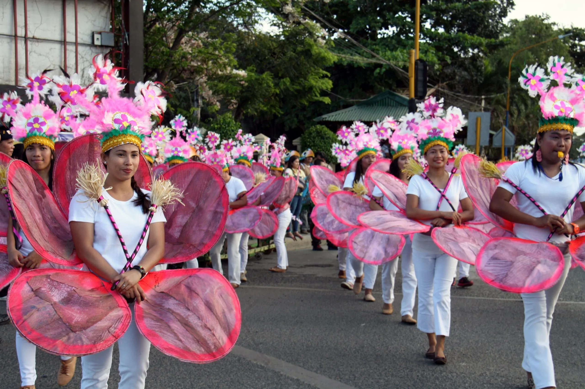

Living Languages
Palawan is a province of linguistic richness. Filipino and English serve as official languages while Cuyonon functions as a regional lingua franca. Each indigenous group maintains its own distinct language: Batak, Tagbanua, and Palaw'an are members of the broader Philippine language family but carry unique vocabularies rooted in the environments their speakers have inhabited for millennia.
Tagbanua script — an ancient syllabic writing system descended from the Brahmic scripts of South and Southeast Asia — is inscribed in UNESCO's Memory of the World Register. Traditionally written on bamboo using a blade, it was used for recording songs, poems, and ritual texts.
Ceremonies and Festivals
Baragatan sa Palawan Festival and Balayong Festival are among the most vibrant celebrations in Palawan. Baragatan sa Palawan highlights the province’s unity and cultural diversity through exhibitions, performances, and local products, while the Balayong Festival in Puerto Princesa celebrates the blooming of cherry blossom-like trees with street dances, parades, and cultural showcases.
For the Palaw'an, the tultul — a form of chanted epic poetry — is performed by specialist chanters during ceremonies and can last for days. These epics narrate the mythological origins of the world and the proper relationship between humans, spirits, and nature. The tultul tradition was inscribed on UNESCO's Intangible Cultural Heritage list in 2014.
Photo Highlights

